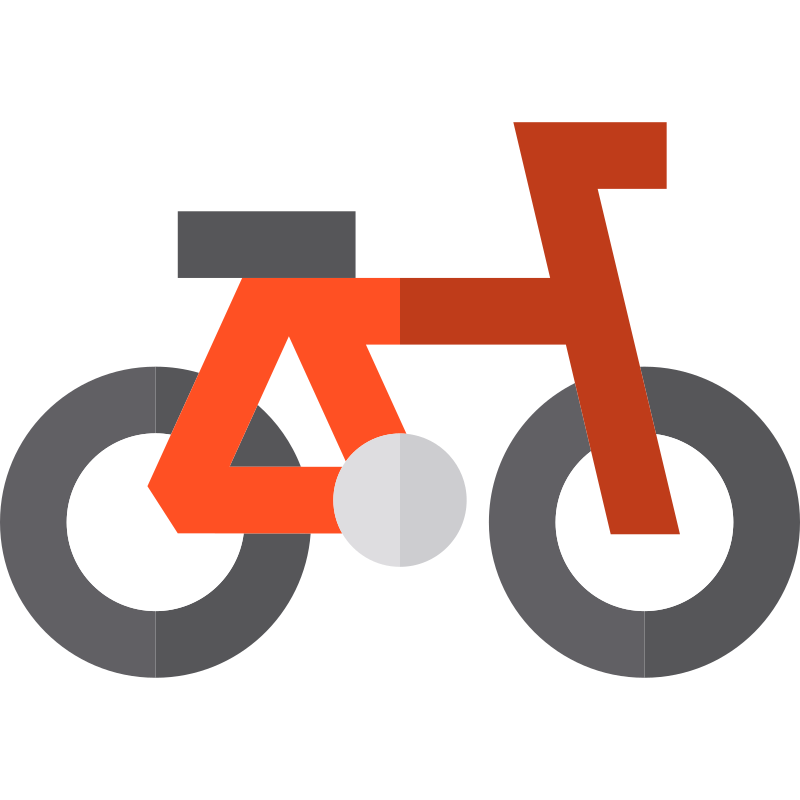

Rower
Ścieżka rowerowa
highway=cyclewayCycleway nieutwardzona
highway=cycleway + szuter/ziemia/piasekPath z dostępem rowerowym
highway=path + bicycle=yes|designatedPath z cycleway
highway=path + cycleway=*Trasy rowerowe
icn/ncn/rcn/lcn=yes, szerokie kolorowe podbicieTrack i ścieżki nie-rowerowe
Path zwykły
highway=path bez roweruDobry path
surface=compacted|gravel|fine_gravelGorszy path
surface=ground|dirt|grass|unpavedPiaszczysty path
surface=sandTrack bez grade
highway=trackTrack grade1najlepszy, prawie pełna linia
Track grade2długie kreski
Track grade3średnie kreski
Track grade4krótsze kreski
Track grade5najgorszy, prawie kropkowany
Drogi zwykłe
Autostrada / trunk
motorway|motorway_link|trunk|trunk_linkDroga główna
primary|primary_linkDroga średnia
secondary|secondary_linkDroga lokalna
tertiary|tertiary_linkUlica / osiedlowa
residential|living_streetRoad / unclassified
unclassified|roadService
driveway|parking_aisle|alleyDrogi nieutwardzone
Dobra nieutwardzona
compacted|gravel|fine_gravel, obwódka jak V15Gorsza nieutwardzona
ground|dirt|grass|sand|unpaved, obwódka jak V15Zwykła lokalna
residential|unclassified|road bez surfaceTeren
Las / puszcza
landuse=forest, natural=woodPiasek / plaża
natural=sand|beachŁąki / zarośla
grassland|scrubPola / naturalne tłofarmland, meadow, orchard itd.
Wodarzeka, jezioro, dock
Lodowiec
glacier|ice_shelfPOI bikepacking
camping / caravan od z11
slipway / marina
nocleg / hostel / hotel
shelter / hut
kajak / canoe
stacja paliw
woda pitna

rowery / serwissupermarket
kawiarnia
Poziomice i nazwy
Poziomica pomocniczaminor contour
Poziomica głównamajor contour, etykieta priority 1
Cityzoom 6, priority 70, size 20
Miasto
Townzoom 7, priority 50, size 18
Miasteczko
Villagezoom 9, priority 40, size 17
Wieś
Hamletzoom 11, priority 30, size 16
Osada